Arida, Wakayama: things to do, food and stays
Arida · Wakayama
Arida
Highlighted on the Wakayama map.
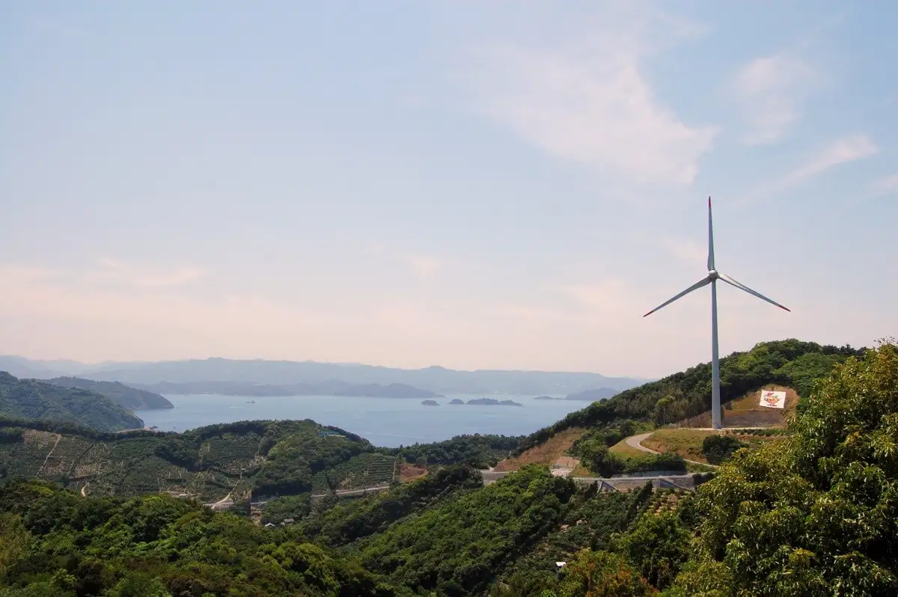
Stay
【料理民宿 松林】朝どれ新鮮★海幸の宿
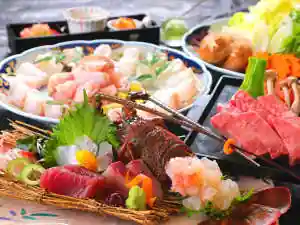
(Ryori Minshuku Matsubayashi) Asa Dore Shinsen Umisachi No Yado
有田川温泉 鮎茶屋 ホテルサンシャイン
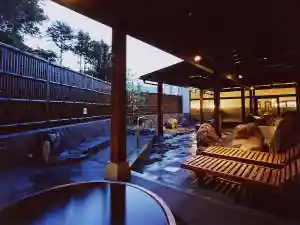
Aridagawa Onsen Ayu Chaya Hotel Sanshain
Hotel at Aridagawa Onsen in Hoshio, Arida with kaiseki dinners.
橘家
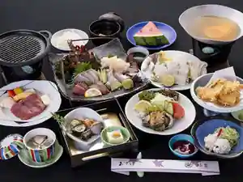
Tachibanaya
Inn in Miyahara, Arida with local seafood dinners.
Dining
和 dining 清乃 本店
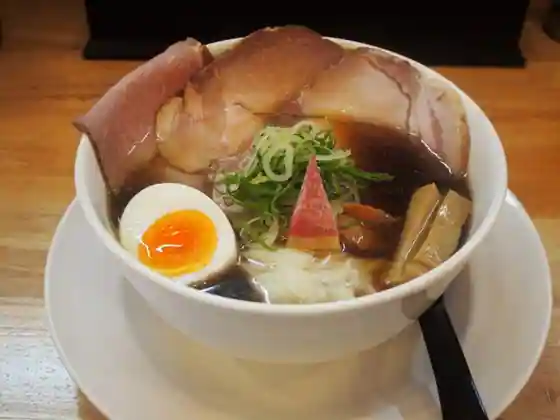
Wa dining Kiyono Hon
しらす屋福扇
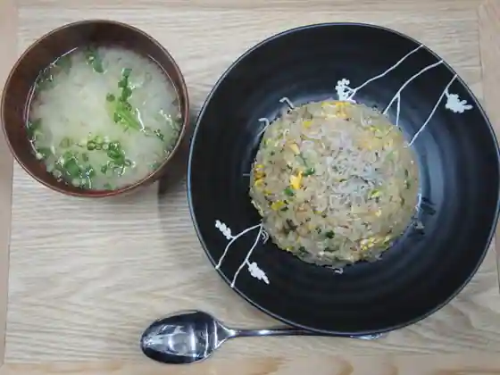
Shirasu Ya Fuku Ogi
伊藤農園直営カフェ みかんの木 有田本店
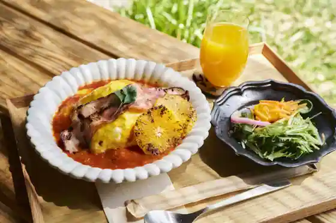
Ito Noen Chokuei Cafe Mikanno Ki Arida Hon
早和果樹園 本社店
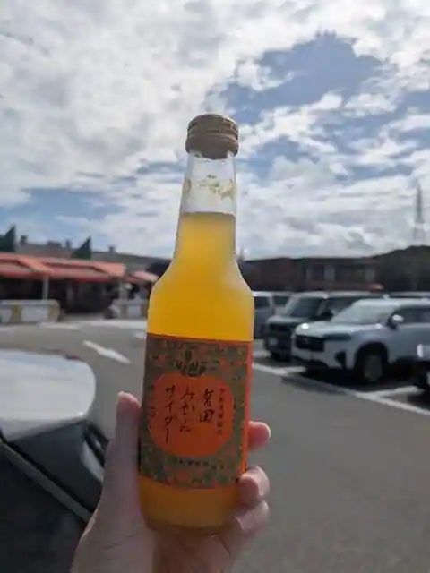
So Wa Kajuen Honsha
帝成楼
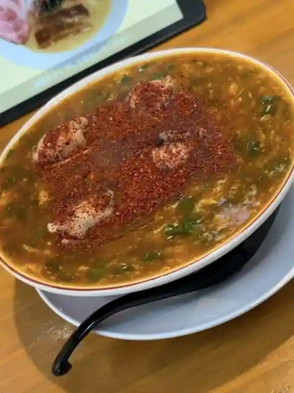
Mikado Sei Ro
テラスカフェ・ライスフィールド
Terrace Cafe Raisufirudo
うなぎ屋かわすい 川口水産
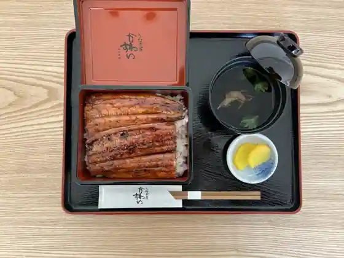
Unagi Ya Kawasui Kawaguchi Suisan
rub luck cafe
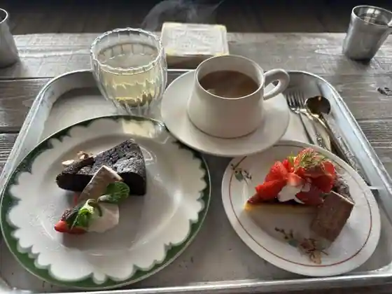
rub luck cafe
絶景カフェ MAKENA
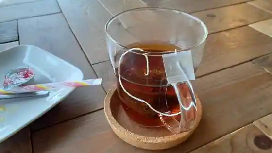
Zekkei Cafe MAKENA
心道
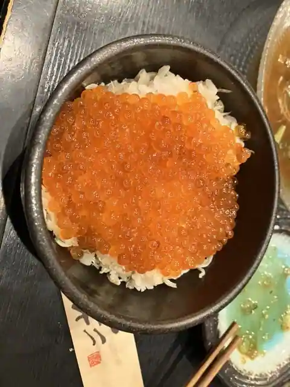
Kokoro Michi
西村物産 直売店
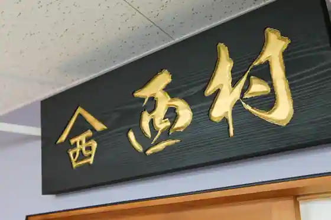
Nishimura Bussan Chokubai
活魚料理 割烹 民宿松林
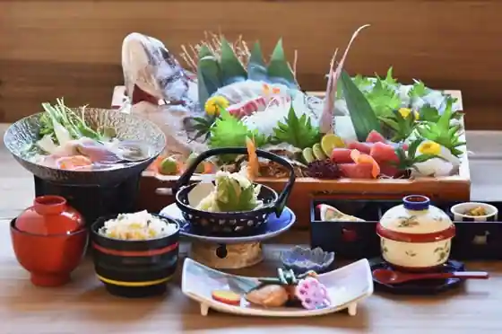
Ikeuo Ryori Kappo Minshuku Matsubayashi
有田川温泉 鮎茶屋
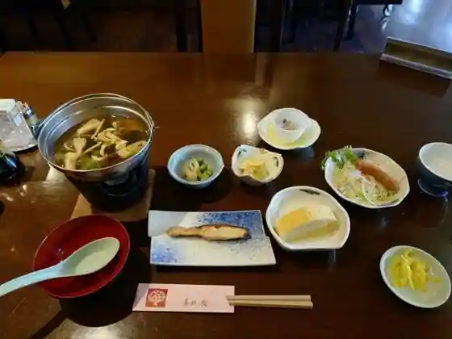
Aridagawa Onsen Ayu Chaya
キラナ
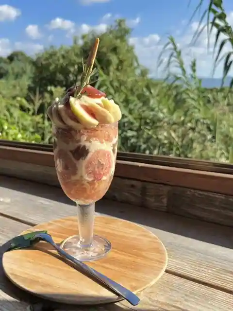
Kirana
寿の鈴なり館
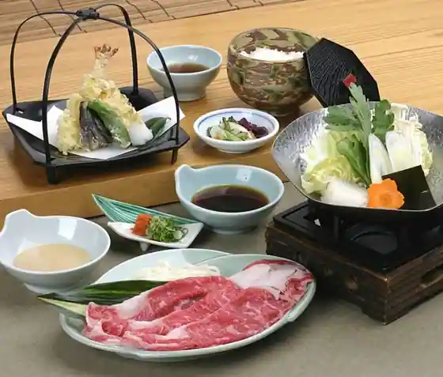
Hisashi No Suzu Nari Kan
テスティモーネ
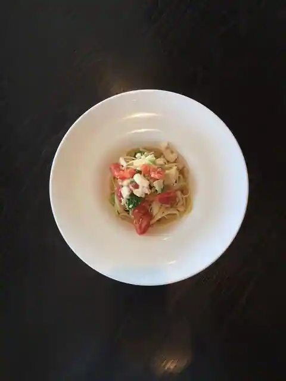
Tesuteimone
菜々しろ
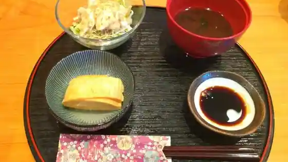
Na (Kurikaesi) Shiro
果汁と果実
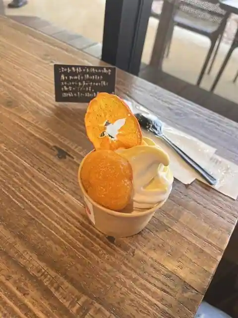
Kaju To Kajitsu
ぽあろ食堂
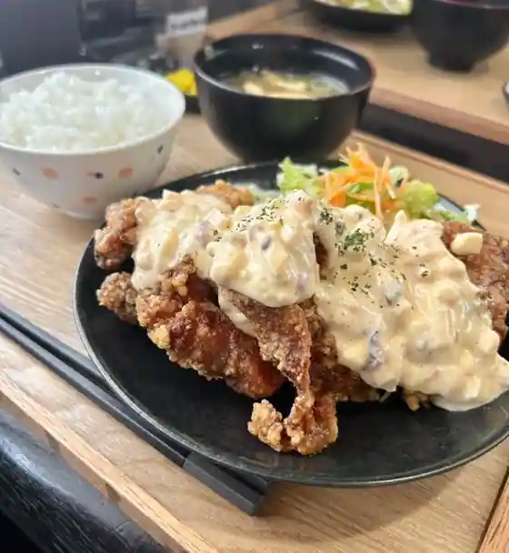
Poaro Shokudo
天乙商店
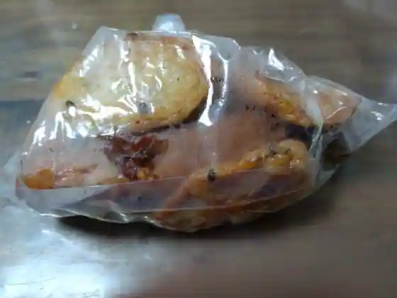
Otsu Sho
キッチン なかの
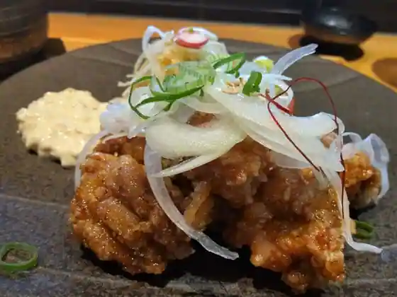
Kitchen Nakano
ごはんや 一日一膳
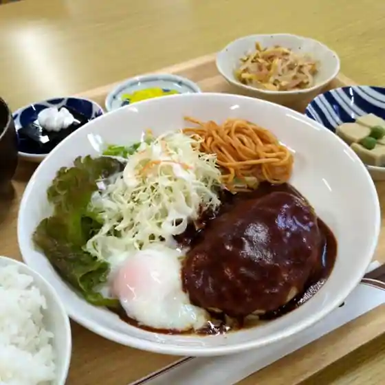
Gohanya Tsuitachi Ichi Zen
HIKARU ORCHIDS
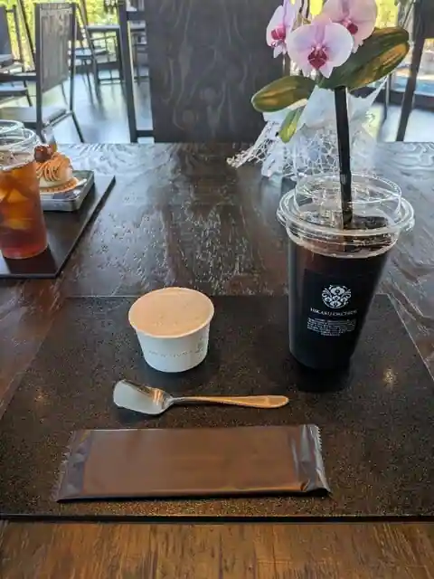
HIKARU ORCHIDS
Sights
Arida Mikan Kaido
Shinsen Market Hama no Utase
Chi no Shima Beach
Miyazaki no Hana
Ito Ware Inari Shrine
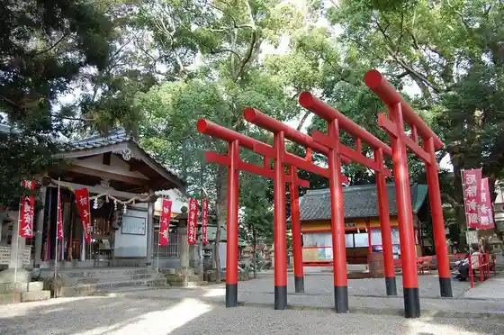
Arida BLUE Campground
Arida Kenko Supotsu Park BIG SMILE PARK
YABITSU VILLAGE
E Nama Tera
Minokawa no Oga Hasu